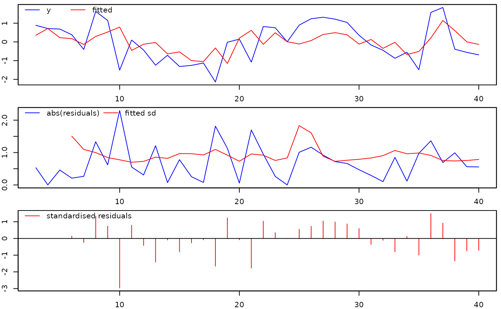

Extraction functions for 'arx' objects
coef.arx.RdExtraction functions for objects of class 'arx'
Usage
# S3 method for class 'arx'
coef(object, spec=NULL, ...)
# S3 method for class 'arx'
fitted(object, spec=NULL, ...)
# S3 method for class 'arx'
logLik(object, ...)
# S3 method for class 'arx'
model.matrix(object, spec=c("mean","variance"), response=FALSE, as.zoo=TRUE, ...)
# S3 method for class 'arx'
nobs(object, spec=NULL, ...)
# S3 method for class 'arx'
plot(x, spec=NULL, col=c("red","blue"),
lty=c("solid","solid"), lwd=c(1,1), ...)
# S3 method for class 'arx'
print(x, signif.stars=TRUE, ...)
# S3 method for class 'arx'
residuals(object, std=FALSE, ...)
# S3 method for class 'arx'
sigma(object, ...)
# S3 method for class 'arx'
summary(object, ...)
# S3 method for class 'arx'
vcov(object, spec=NULL, ...)Arguments
- object
an object of class 'arx'
- x
an object of class 'arx'
- spec
NULL,"mean","variance"or, in some instances, "both". WhenNULLis a valid value, then it is automatically determined whether information pertaining to the mean or variance specification should be returned- response
logical. IfTRUE, then the response is included in the first column- as.zoo
logical. IfTRUE(default), then the returned matrix is of classzoo- signif.stars
logical. IfTRUE, then p-values are additionally encoded visually, seeprintCoefmat- std
logical. IfFALSE(default), then the mean residuals are returned. If TRUE, then the standardised residuals are returned- col
colours of actual (default=blue) and fitted (default=red) lines
- lty
types of actual (default=solid) and fitted (default=solid) lines
- lwd
widths of actual (default=1) and fitted (default=1) lines
- ...
additional arguments
Value
- coef:
a numeric vector containing parameter estimates
- fitted:
a
zooobject with fitted values- logLik:
log-likelihood (normal density)
- model.matrix:
a matrix with the regressors and, optionally, the response
- nobs:
the number of observations
- plot:
a plot of the fitted values and the residuals
- print:
a print of the estimation results
- residuals:
a
zooobject with the residuals- sigma:
the regression standard error ('SE of regression')
- summary:
a print of the items in the
arxobject- vcov:
variance-covariance matrix
Author
Felix Pretis, https://felixpretis.climateeconometrics.org/
James Reade, https://sites.google.com/site/jjamesreade/
Moritz Schwarz, https://www.inet.ox.ac.uk/people/moritz-schwarz
Genaro Sucarrat, http://www.sucarrat.net/
Examples
##simulate from an AR(1):
set.seed(123)
y <- arima.sim(list(ar=0.4), 40)
##simulate four independent Gaussian regressors:
xregs <- matrix(rnorm(4*40), 40, 4)
##estimate an 'arx' model: An AR(2) with intercept and four conditioning
##regressors in the mean, and log-ARCH(3) in the variance:
mymod <- arx(y, mc=TRUE, ar=1:2, mxreg=xregs, arch=1:3)
##print results:
print(mymod)
#>
#> Date: Thu Apr 3 08:22:53 2025
#> Dependent var.: y
#> Method: Ordinary Least Squares (OLS)
#> Variance-Covariance: Ordinary
#> No. of observations (mean eq.): 38
#> Sample: 3 to 40
#>
#> Mean equation:
#>
#> coef std.error t-stat p-value
#> mconst 0.012935 0.158622 0.0815 0.93553
#> ar1 0.433919 0.184652 2.3499 0.02532 *
#> ar2 -0.158899 0.179586 -0.8848 0.38307
#> mxreg1 0.212861 0.207773 1.0245 0.31353
#> mxreg2 0.177448 0.193842 0.9154 0.36704
#> mxreg3 0.213397 0.143935 1.4826 0.14828
#> mxreg4 -0.052338 0.181769 -0.2879 0.77531
#> ---
#> Signif. codes: 0 ‘***’ 0.001 ‘**’ 0.01 ‘*’ 0.05 ‘.’ 0.1 ‘ ’ 1
#>
#> Log-variance equation:
#>
#> coef std.error t-stat p-value
#> vconst -0.618004 0.802233 0.5934 0.4411
#> arch1 -0.101829 0.179553 -0.5671 0.5747
#> arch2 -0.097682 0.153166 -0.6378 0.5283
#> arch3 -0.026241 0.154150 -0.1702 0.8659
#>
#> Diagnostics and fit:
#>
#> Chi-sq df p-value
#> Ljung-Box AR(3) 5.2768 3 0.1526
#> Ljung-Box ARCH(4) 3.0297 4 0.5529
#>
#> SE of regression 0.97003
#> R-squared 0.25544
#> Log-lik.(n=35) -46.34537
##plot the fitted vs. actual values, and the residuals:
plot(mymod)

##print the entries of object 'mymod':
summary(mymod)
#> Length Class Mode
#> call 6 -none- call
#> date 1 -none- character
#> version 1 -none- character
#> aux 19 -none- list
#> n 1 -none- numeric
#> k 1 -none- numeric
#> df 1 -none- numeric
#> coefficients 7 -none- numeric
#> mean.fit 38 zoo numeric
#> residuals 38 zoo numeric
#> rss 1 -none- numeric
#> sigma2 1 -none- numeric
#> vcov.mean 49 -none- numeric
#> logl 1 -none- numeric
#> Elnz2 1 -none- numeric
#> vcov.var 9 -none- numeric
#> var.fit 38 zoo numeric
#> std.residuals 38 zoo numeric
#> ustar.residuals 38 zoo numeric
#> variance.results 4 data.frame list
#> mean.results 4 data.frame list
#> diagnostics 6 -none- numeric
##extract coefficient estimates (automatically determined):
coef(mymod)
#> mconst ar1 ar2 mxreg1 mxreg2 mxreg3
#> 0.01293470 0.43391913 -0.15889898 0.21286069 0.17744754 0.21339735
#> mxreg4 vconst arch1 arch2 arch3 Elnz2
#> -0.05233799 -0.61800361 -0.10182905 -0.09768241 -0.02624072 -1.51108503
##extract mean coefficients only:
coef(mymod, spec="mean")
#> mconst ar1 ar2 mxreg1 mxreg2 mxreg3
#> 0.01293470 0.43391913 -0.15889898 0.21286069 0.17744754 0.21339735
#> mxreg4
#> -0.05233799
##extract log-variance coefficients only:
coef(mymod, spec="variance")
#> vconst arch1 arch2 arch3 Elnz2
#> -0.61800361 -0.10182905 -0.09768241 -0.02624072 -1.51108503
##extract all coefficient estimates:
coef(mymod, spec="both")
#> mconst ar1 ar2 mxreg1 mxreg2 mxreg3
#> 0.01293470 0.43391913 -0.15889898 0.21286069 0.17744754 0.21339735
#> mxreg4 vconst arch1 arch2 arch3 Elnz2
#> -0.05233799 -0.61800361 -0.10182905 -0.09768241 -0.02624072 -1.51108503
##extract regression standard error:
sigma(mymod)
#> [1] 0.9700325
##extract log-likelihood:
logLik(mymod)
#> 'log Lik.' -46.34537 (df=7)
##extract variance-covariance matrix of mean equation:
vcov(mymod)
#> mconst ar1 ar2 mxreg1 mxreg2
#> mconst 0.0251610272 -0.0015285628 0.0005370087 -0.002488587 0.002689960
#> ar1 -0.0015285628 0.0340965226 -0.0137456546 0.009800237 -0.009656845
#> ar2 0.0005370087 -0.0137456546 0.0322510692 -0.009227215 -0.001875021
#> mxreg1 -0.0024885867 0.0098002369 -0.0092272152 0.043169627 0.004287598
#> mxreg2 0.0026899595 -0.0096568451 -0.0018750214 0.004287598 0.037574668
#> mxreg3 0.0009279521 0.0003525202 -0.0060498526 -0.004381605 0.002430933
#> mxreg4 0.0008675077 0.0006219531 0.0033660813 -0.008426761 -0.001919049
#> mxreg3 mxreg4
#> mconst 0.0009279521 0.0008675077
#> ar1 0.0003525202 0.0006219531
#> ar2 -0.0060498526 0.0033660813
#> mxreg1 -0.0043816051 -0.0084267606
#> mxreg2 0.0024309326 -0.0019190488
#> mxreg3 0.0207172909 -0.0035607424
#> mxreg4 -0.0035607424 0.0330397967
##extract variance-covariance matrix of log-variance equation:
vcov(mymod, spec="variance")
#> arch1 arch2 arch3
#> arch1 0.032239225 0.002548225 0.003175857
#> arch2 0.002548225 0.023459962 0.002435217
#> arch3 0.003175857 0.002435217 0.023762073
##extract and plot the fitted mean values (automatically determined):
mfit <- fitted(mymod)
plot(mfit)
##extract and plot the fitted variance values:
vfit <- fitted(mymod, spec="variance")
plot(vfit)
##extract and plot both the fitted mean and variance values:
vfit <- fitted(mymod, spec="both")
plot(vfit)
##extract and plot the fitted mean values:
vfit <- fitted(mymod, spec="mean")
plot(vfit)
 ##extract and plot residuals:
epshat <- residuals(mymod)
plot(epshat)
##extract and plot standardised residuals:
zhat <- residuals(mymod, std=TRUE)
plot(zhat)
##extract and plot residuals:
epshat <- residuals(mymod)
plot(epshat)
##extract and plot standardised residuals:
zhat <- residuals(mymod, std=TRUE)
plot(zhat)